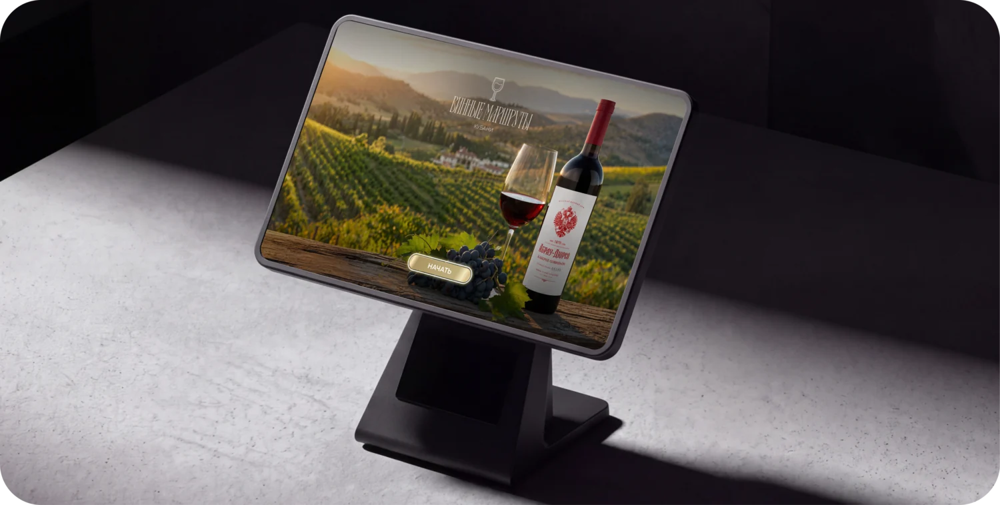

Винные маршруты Кубани
Интерактивная туристическая платформа с маршрутами и цифровым двойником виноделен.


Проектирую цифровые продукты для web, mobile и интерактивных систем, учитывая задачи бизнеса, потребности пользователей и особенности платформы.

Интерактивная туристическая платформа с маршрутами и цифровым двойником виноделен.

Открыт к новым возможностям, интересным проектам и профессиональному сотрудничеству.